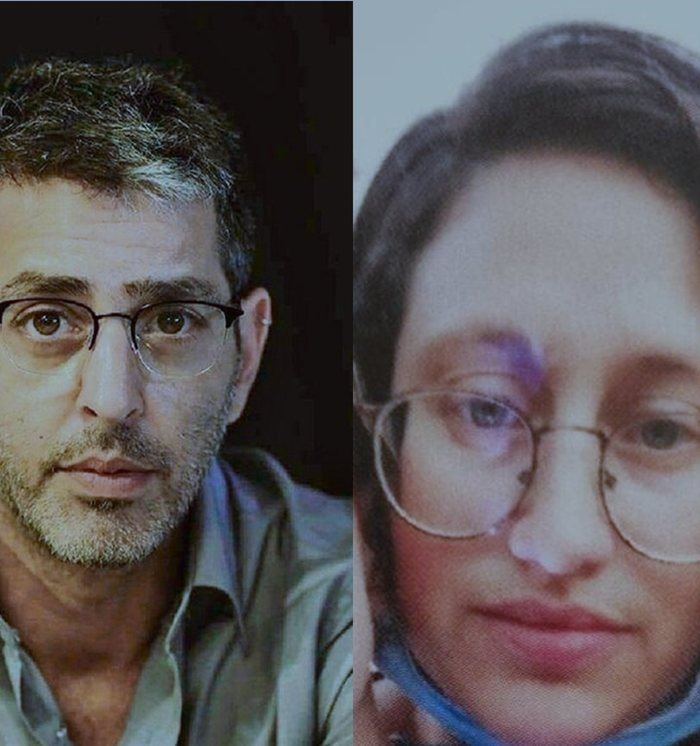

7 ottobre 2023
Michael e Amalia Idan · 9 e 6 anni

«Papà è morto. Mamma è morta.»
La famiglia Idan viveva nel kibbutz di Kfar Aza, a pochi chilometri dal confine con Gaza. Roy, 45 anni, era fotoreporter di Ynet. Sua moglie Smadar ne aveva 38. I figli erano Michael, 9 anni, Amalia, 6, e Abigail, 3.
Alle 6.29 suonò l'allarme. Roy uscì a fotografare, documentò l'arrivo dei terroristi con i parapendii a motore e mandò le immagini alla redazione, avvisando anche i responsabili del kibbutz. Pochi minuti dopo un terrorista sparò attraverso una finestra e uccise Smadar davanti ai tre figli. Roy tornò, la trovò morta, prese in braccio Abigail e corse fuori con Michael e Amalia. Un terrorista che indossava un'uniforme dell'esercito israeliano gli sparò mentre teneva in braccio la figlia.
Michael e Amalia tornarono di corsa nella stanza di sicurezza e si nascosero in un armadio. Da lì chiamarono il numero d'emergenza del Magen David Adom, e un operatore del supporto psicologico d'emergenza rimase al telefono con loro per quasi dodici ore. Ai nonni dissero che il papà era morto, che la mamma era morta e che anche Abigail era morta.
Abigail invece era viva. Era sgusciata da sotto il corpo del padre e aveva attraversato il kibbutz da sola, fino alla casa dei Brodutch, dove abitava Uriah, il suo migliore amico dell'asilo. Verso le 11 i terroristi entrarono anche lì. Hagar Brodutch provò a proteggere i bambini gridando che erano solo bambini, ma furono caricati tutti su un'auto e portati a Gaza.
Michael e Amalia furono tratti in salvo dalle forze speciali verso le 19.20, dopo circa dodici ore nell'armadio. Roy e Smadar furono sepolti uno accanto all'altra il 20 ottobre 2023 nel moshav di Kfar HaRif. Abigail fu liberata il 26 novembre 2023 insieme ai Brodutch e ritrovò i fratelli. I tre bambini furono poi adottati dalla zia Liron Mor, da suo marito Zoli e dai loro figli.
Fonte originale
Ricostruzione minuto per minuto dell'emittente pubblica israeliana KAN, con fotografie e registrazioni. La pagina è in inglese. Il racconto in italiano è a cura dell'Associazione Italia Israele • Alessandria עמותת איטליה־ישראל אלסנדריה.
Apri la fonte · KAN 7.10.360